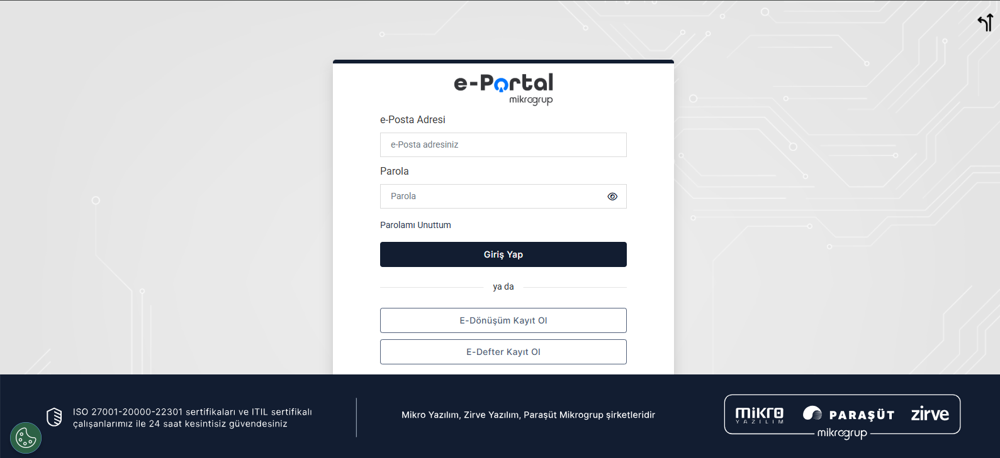

Fatura Tasarımları
Fatura tasarımları, hem Mikro Muhasebe yazılımında hem de diğer programlarda XSLT tabanlı editörler kullanılarak hazırlanır.
Bu editörlerde fatura tasarımı açıldığında:
- Sol tarafta faturanın görsel önizlemesi,
- Sağ tarafta ise kod yapısı görüntülenir.
HTML yapısına aşina olanlar için XSLT’nin kod yapısı oldukça tanıdıktır.
Tasarımın otomatik kodlarının altında yer alan STYLE bloğunda CSS kodları bulunur.
Bu bölümde:
- CSS ile tasarım üzerinde değişiklik yapılabilir.
- HTML benzeri yapı içerisine
styleattributeleri eklenerek özelleştirme gerçekleştirilebilir.
Fatura Tasarımının Genel Yapısı
1. Sayfa Başlığı
- Faturanın üst kısmında genellikle GİB (Gelir İdaresi Başkanlığı) amblemi yer alır.
- Hemen altında fatura türüne göre E-Fatura, E-Arşiv veya E-İrsaliye başlığı bulunur.
2. Firma Bilgileri
- Amblemin sol tarafında alıcı ve verici firma bilgileri yer alır.
- Bu bilgiler genellikle otomatik olarak çekilir.
- Sabit metinler dışında değişken bilgileri eklemek daha karmaşık bir süreçtir.
3. Sağ Bölüm
- Faturanın sağ tarafında, fatura türünü belirten QR kodu bulunur.
- Fatura sahibi firmanın logosu yer alır.
- Logonun altında genellikle:
- Özelleştirme numarası
- Senaryo
- Sevk tarihi
- Sevk zamanı gibi bilgiler yer alır.
4. Detay Tablosu
- Faturanın orta kısmında detay bilgilerin yer aldığı tablo bulunur.
- Mal kodu, mal miktarı gibi bilgiler bu tabloda yer alır.
- Hazır dizaynlarda bu kodlar önceden tanımlıdır.
- İsteğe bağlı olarak bilgiler eklenip çıkarılabilir.
- Hazır dizaynlarda olmayan özel bilgiler
descriptionözelliği veya Mikro’nun note alanı ile eklenebilir.
5. Toplam Tutar Tablosu
- Detay tablosunun altında yer alır.
- Küçük boyutlu bu tabloda toplam tutar bilgileri bulunur.
- Sabit bilgiler eklenip çıkarılabilir.
6. Açıklama Alanı
- Faturanın en alt kısmında bulunur.
- Genellikle:
- Hazır metinler
- Taşıyıcı bilgileri
- IBAN bilgileri gibi detaylar yer alır.

Mikro Yazılım Özelinde Fatura Tasarımı
Mikro Muhasebe yazılımında fatura tasarımları, Mikro Portal sistemi üzerinden giriş yapılarak düzenlenebilir.
Portal üzerinden:
- Gerekli değişiklikler kolayca uygulanabilir.
- Tasarımlar özelleştirilebilir.

Mikro Muhasebe Programı ile ilgili Insert Kodları toplu ve detaylı açıklama için GitHub'ımı ziyaret edin.
 GitHub'ı Görüntüle
GitHub'ı Görüntüle